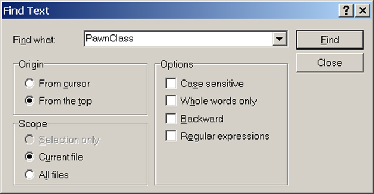
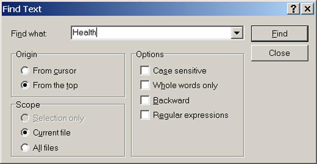
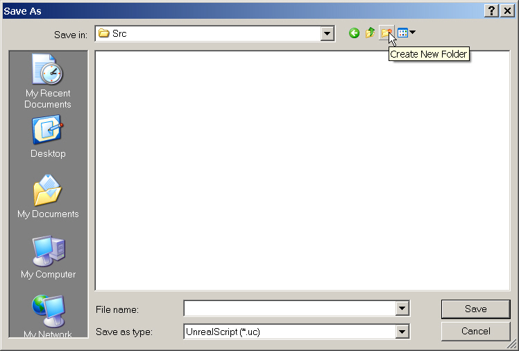
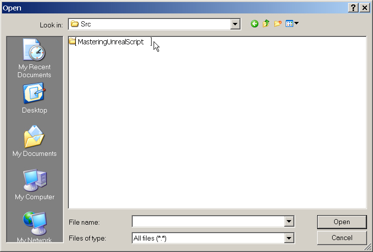
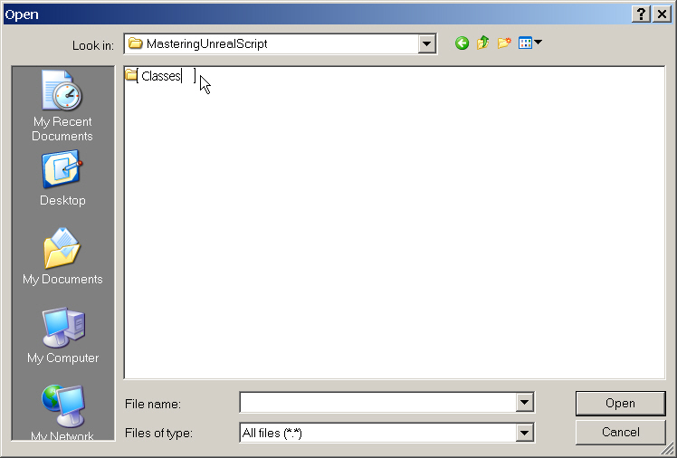
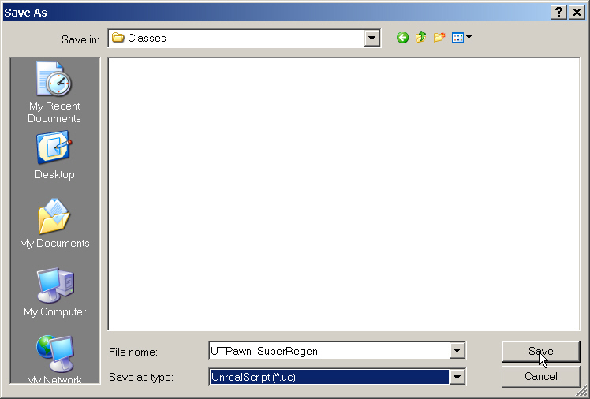
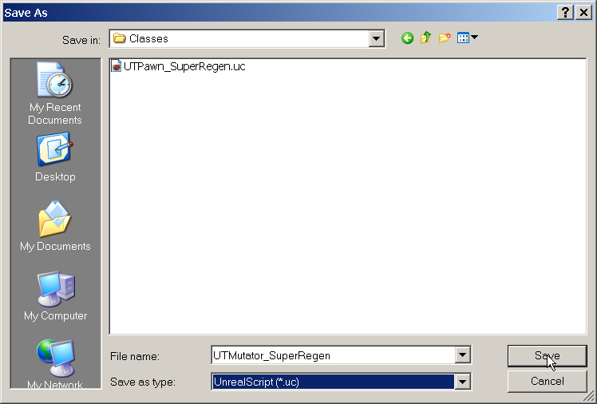
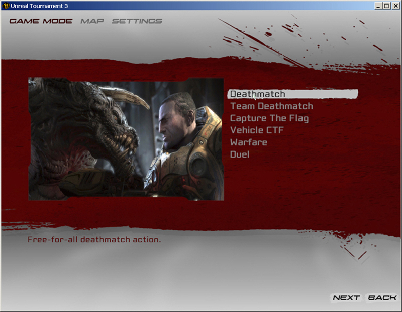
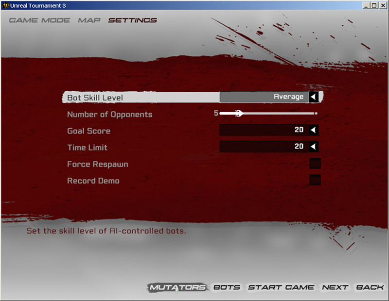
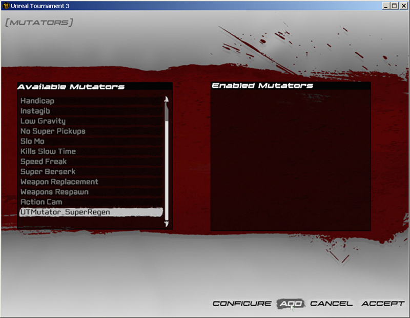

UDN
Search public documentation:
MasteringUnrealScriptBaptismByFireCH
English Translation
日本語訳
한국어
Interested in the Unreal Engine?
Visit the Unreal Technology site.
Looking for jobs and company info?
Check out the Epic games site.
Questions about support via UDN?
Contact the UDN Staff
日本語訳
한국어
Interested in the Unreal Engine?
Visit the Unreal Technology site.
Looking for jobs and company info?
Check out the Epic games site.
Questions about support via UDN?
Contact the UDN Staff
第二章: UNREALSCRIPT的初级学习
无论您是第一次开始学习编程或者只是简单地学习一种新的语言，开始一个新的学习旅程的想法都可能有点令人畏惧。使用UnrealScript进行编程需要您具有很多方面的知识，其中有几个是非常复杂的。在我们深入了解UnrealScript之前，我们将通过创建非常简单的脚本来对它提有一个初步的认识。这里我们将不会深入地介绍在创建脚本过程中使用的概念。但是，本章为您提供了一个机会使您熟悉从计划到实现以及到实施的过程中创建脚本的过程，它向您展示了UnrealScript实现您的想法的强大威力。尽管这个练习中没有必要介绍UnrealScript语言的相关知识，但我们仍然需要介绍一些基本概念以便可以进一步学习。2.1基本语法
UnrealScript开发人员想开发一种对于C++和Java程序员来说都熟悉的语言，所以当设计语言时，他们以C语言的风格来创建它。所有这些意味着它和这些语言具有类似的语法，比如使用分号终止一个语句(一行代码)，并且使用花括号({ })来包含一组语句。 当我们书写代码时，我们本质上是在不断地重复几组标示符、关键字、操作符及注释来创建我们想要的功能。让我们对这些概念中的每一个都有一个简单的认识。标识符和关键字
修饰符是程序员为他们想引用的项所取的名称，比如类、变量及函数名。在UnrealScript中，所有的修饰符都是大小写不敏感的，这意味着RegenPerSecond、REGENperSECOND和 ReGeNpErSeCoNd都被认为是同一个标识符。 当提到标示符名称时，有几个需要知道的规则： 1. 所有的标示符必须以字母或下划线(_)开始。 2. 后面可以跟随任何字母、数字或下划线的组合物。 3. 标识符不能包含空格。 4. 标示符不能和关键字一样。 有效标识符的几个例子：___ValidIdentifier Valid_Identifier Valid123Identifier456无效标识符的几个例子：
3_Invalid Inv@lid Invalid Identifier class关键字是编译器保留的特殊单词，它们对应着特定的功能。在我们的示例脚本中，我们看到了几个不同的关键字：class function var defaultproperties。和标识符一样，关键字也是大小写不敏感的。
表达式和操作符
表达式是一组值、操作符和分组符号构成的一个实体，当计算表达式的结果时将会产生某些可以存储的有意义的值。这里是一个示例表达式列表：100 8 + (3 – 2) * 7 2 * PI操作符是特殊的函数，它可以操作每项的值，称为操作数；操作数是表达式的主要部分，因为所有的重要的表达式都会使用它们。我们在上面的示例表达式中看到了一些操作符：+ () *。 操作符和表达式是任何程序的必要部分。同样，在稍后的一章将会对其进行详细的介绍。目前，这里为您提供了是您可以继续进行本章剩余部分所需要的必要的知识。
注释
注释用于为您的源代码提供文档，编译器将完全地忽略它们。通常，有时候它们用于描述函数及它们的参数的作用。当在一个项目上进行合作时，注释是非常重要的，因为通过注释其它程序员可以很容易地阅读和理解代码。如果代码没有适当的文档及解释，那么从代码创建后很长时间过去后，那写代码对于其他人甚至它的作者来说都是令人难以理解的。 注释的另一个应用是在测试和调试期间。代码的一部分可以被“注释掉”，这意味着这段代码将不会再被识别及执行。这个方法可以用于查找代码中存在问题的部分或者用于查看代码中类似的两部分之间的区别。为这个目的使用注释时可以免除删除及重新书写代码带来的麻烦，从而使得整个过程更加简单更加有效。 UnrealScript支持两种类型的注释结构：// A line comment（行注释） /* A block comment(块注释) */行注释是指以一对正斜杠(//)开始一直到达了行的尾部为止。块注释告诉编译器忽略在开始(/*)和结束(*/)注释标记之间的任何内容。 这里是当添加脚本时，我们的示例脚本样子：
/* This class provides the ability for the player to regenerate his
health every second. (这个类提供了使玩家在每秒钟重新生成它的健康值的能力。) */
class UTMutator_SuperRegen extends UTMutator;
// The number of hit points that should be restored every second.(每秒钟要存储的碰撞点的数量)
var() float RegenPerSecond;
function InitMutator(string Options, out string ErrorMessage)
{
SetTimer( 1.0, true /* This timer should be called repeatedly */ );
Super.InitMutator( Options, ErrorMessage );
}
2.2再生MUTATOR(设置方法)
在接下来的几部分中，您将会创建一个新的MUTATOR(设置方法)。Unreal中的MUTATOR(设置方法)是指以某种方式改变标准的游戏函数的脚本。这可以是像把地图中的所有武器替换为火箭发射器那样简单或者它也可以涉及到更多的内容，比如该把玩家的视图从第一人称改为第三人称。在我们的示例中，我们将使用设置方法来是玩家的生命值在打游戏过程中每秒重新生成指定量的生命值。 正如前一章所说的，ConTEXT是这本书中所有实例和指南使用的文本编辑器。如果您打算使用ConTEXT，请确保您已经根据附录B设置了它：为虚幻引擎3设置ConTEXT。如果您打算使用WOTGreal，请参照附录C:为虚幻引擎3设置WOTGreal。设计类的计划
在书写任何代码之前，我们为脚本真正应该做的事情创建一个详细的计划是很重要的。我们已经说过mutator(设置方法)应该在每秒中重新生成玩家的生命值。这是一个好的开始，但是我们要问一些更多的可以帮助我们实现这个功能的问题。- 我们怎样重新生成生命值?
- 要重新声称所有玩家的生命值吗？包括机器人？
- 每秒钟应该重新生成多少生命值？
- 这个值是可以配置的吗？
- 直到生命值到达哪个点时才停止重新生成生命值？
- 有没有不应该重新生成生命值的情况？
指南 2.1 –研究再生Mutaor(设置方法)
这时，我们需要进行一些研究。在进行实际的编码之前我们需要解决几个问题。第一，我们需要某种方法来使用我们的处理再生的类替换游戏中所有玩家。第二，我们需要找到任何条件下允许玩家可以拥有的最大生命值或者代表这个值变量。最后，需要某种用于判定玩家是否在引起痛苦的体积中的方法。 当尝试查找特定的信息片段时知道从哪里找到通常是很难的。您会发现随着您对Unreal类的熟悉，您便可以更加容易地查找到您想找到的东西。 1. GameInfo处理关于游戏类型方面的功能。这里是开始寻找使用我们自己的类来代替游戏中使用的默认pawn类的方法的最好的地方。找到位于../Engine/Classes目录中的GameInfo.uc脚本并打开它。 2. 大多数情况下，使用文本编辑器中内置的搜索功能来定位特定关键字是一种查找您想要的东西的最好方法。因为我们正在想设计游戏中的所有Pawns使用那个类，所以PawnClass将是用于搜索的较好的关键字。确保您是从文档的顶部开始搜索是很重要的，这样您便不会忽略任何东西。
图片 2.1 – 搜索GameInfo 类获取关键字“PawnClass”的查找文本对话框 3. 首先通过按下Ctrl + F键，执行一次针对关键字PawnClass的Actor类搜索。在Find Text (查找文本)对话框的Find What(查找)文本域中输入关键字“PawnClass”。同时请确保选择了From the top(从顶部开始)选项。 第一个匹配值是： var class

图片 2.2 –搜索UTPawn 类来查找关键字“Health”的Find Text (查找文本)对话框 搜索到的第一项应该是： var int SuperHealthMax; /** Maximum allowable boosted health (允许的增加的最大生命值)*/ 这正是我们要找的。通过掌握这些信息，我们现在可以继续搜索我们书写脚本所需要的最后一条信息。 6. 如果您没有任何Unreal经验，无论是关卡设计或脚本编写经验，那么知道这最后的搜索要查找的东西可能是都困难的。体积是Unreal中使用的一种用于定义一块空间区域的方法。某些体积，尤其是PhysicsVolumes可以影响它们包围的控件的物理属性并且可以通过使用bPainCausing属性使得在它内部的任何玩家遭受痛苦。知道了这点知识后，我们可以设计一个使用关键字bPainCausing的搜索。从UTPawn类中开始搜索是有意义的，但是我们的搜索却没有获得任何有用的东西。于是我们开始移动到下一个选择Pawn类的父类进行搜索。 打开位于../Engine/Classes目录中的Pawn.uc脚本。 7. 再次，按下Ctrl + F来执行搜索。在Find what(查找内容)中输入“bPainCausing”关键字，并选择From the top(从顶部开始)选项。然后按下Find(查找)开始搜索。
图片 2.3 –搜索Actor类来查找关键字“PhysicsVolume”的Find Text (查找文本)对话框 8. 这次搜索的第一个匹配项显示了以下信息：
//Pain timer just expired. (Pain计时器已经过期。)
//Check what zone I'm in (and which parts are)(检查我再区域(以及是哪个部分))。
//based on that cause damage, and reset BreathTime(根据它来产生伤害并充值BreathTime(呼吸时间))
function bool IsInPain()
{
local PhysicsVolume V;
ForEach TouchingActors(class'PhysicsVolume',V)
if ( V.bPainCausing && (V.DamagePerSec > 0) )
return true;
return false;
}
再次，我们又找到了我们要找的东西。
当我们具有了适当的可靠计划和必要信息后，我们可以开始书写我们的再生mutator(设置方法)的代码了。
指南 2.2 –初始化PAWN类设置
1. 如果ConTEXT还没有打开，打开ConTEXT。 2. 为了开始书写自定义的Pawn类的代码，我们需要做的第一件事情是新建一个脚本文件。从File(文件)菜单中选择New(新建)或按下工具条上的New File(新建文件)按钮。
图片2.4 –New File(新建文件)按钮 3. 使用Select Active Highlighter(选择激活的文件轮廓)下拉列表中为这个文件选择UnrealEd 或 UnrealScript轮廓。您可以根据您安装的轮廓和您的个人喜好来选择轮廓。

图片 2.5 – Select Active Highlighter(选择激活的文件轮廓)下拉列表 4. 现在我们开始书写代码。任何新的脚本的第一部分都是类的声明。这里我们为脚本取一个名称，并决定它的父类是什么。在第一行，输入以下信息： class UTPawn_SuperRegen extends UTPawn; 在这行代码中，我们命名了我们的类UTPawn_SuperRegen。我们也指出了它是从UTPawn类继承而来的。这从本质上意味着我们的类将会包含了UTPawn类中的所有功能和我们自己添加的任何功能。 5. 我们将会使用一个变量来代表每秒钟要重新生成的玩家的生命值的量。按下回车键两次后在第三行输入以下代码： var int RegenPerSecond; 在下一步中，将那个会给予这个变量一个初始值，但是当修改生命值时这个值实际上不会被进一步的使用。 6. 初始化类设置的最后部分设计了创建defaultproperties(默认属性)块。这将会用于放置我们的类得属性的值。按下回车键几次后输入以下代码：
defaultproperties
{
RegenPerSecond = 10
}
这里，我们已经指定了这个mutator(设置方法)的组的名称以及RegenPerSec变量的初始值。
7. 那将会终止类的初始化设置。这是，代码应该如下所示是：
class UTPawn_SuperRegen extends UTPawn;
var int RegenPerSecond;
defaultproperties
{
RegenPerSecond=10
}
8. 现在我们保存脚本以便我们的进展不会丢失。从File(文件)菜单中，选择Save as(另存为)…。在对话框中，您可以打开到以下目录之一的导航：
对于Windows XP来说:
C:\Documents and Settings\[User Name]\My Documents\My Games\Unreal Tournament 3\UTGame\Src
对于 Windows Vista来说:
C:\Users\[User Name]\Documents\My Games\Unreal Tournament 3\UTGame\Src
9. 在Src目录中创建新的Folder(文件夹)

图片 2.6 –Save As (另存为)对话框中的Create New Folder (创建新文件夹)按钮 将这个新文件夹命名为MasteringUnrealScript。

图片 2.7 –已经创建了一个名称为MasteringUnrealScript 的新文件夹 10. 打开这个目录并创建另一个新文件夹。命名这个文件夹为Classes并打开它。

图片 2.8 –已经创建了一个命名为Classes 的新文件夹 11. 最后，输入UTPawn_SuperRegen作为脚本的名称，请确保在Save as(另存为)对话框的type(类型)文本域中选择了UnrealScript (*.uc)，然后点击Save(保存)。

图片 2.9 – The Pawn script has been named and is ready to be saved. 已经命名了Pawn脚本并准备保存。 当然，这是类没有新添加的功能。我们将会在下个指南中添加这个功能。
指南 2.3 –设置再生计时器
创建了我们的新的Pawn类后，我们需要在它内部添加功能，以便使它和标准的UTPawn类区分开来。这将包括设立Timer函数，每次执行这个函数时都会增加玩家的Health(生命值)，同时也包含一个用于确保每秒执行这个Timer的方法。 1. 继续前一个指南，在ConTEXT中打开UTPawn_SuperRegen.uc文件。 2. 在RegenPerSecond变量声明后，通过输入以下信息来声明Timer函数：
function Timer()
{
}
Timers是一种特殊类型的函数，它将会在特定的时间量过去后被调用，并且可以强制不断地执行它。这使得它们是适合我们的目的的理想函数。
3. 现在，我们开始为我们的Timer函数添加新的功能。把鼠标光标放在开始花括号({)的后面，并按下回车键。然后按Table键来缩进这个代码端。输入以下代码：
if (Controller.IsA('PlayerController') && !IsInPain() && Health<SuperHealthMax)
{
}
这段代码乍一看可能有点复杂，但是实际上它是非常简单的。当把它分为几部分时或许会更加容易理解。
if ()
{
}
开始是一个IF语句。它实质上是说如果圆括号内的表达式为真，那么将会执行放在花括号({})中的代码。
Controller.IsA('PlayerController')
这段代码检测这个Pawn是否是由玩家控制的。如果是，那么我们将会继续执行下一段代码。
IsInPain()
这个表达式是检测这个Pawn是否在引发痛苦的体积中。如果他不在(注意!标记)，我们将会继续执行下一段代码。
Health < SuperHealthMax
这个表达式用于检测这个Pawn的Health(生命值)是否小于允许的最大生命值的绝对值。如果是，那么将会执行花括号 ({})间的代码
4. 把光标放在If语句的开始的花括号({)的后面并按下回车键。然后按下Tab键缩放这段代码。输入以下代码：
Health = Min(Health+RegenPerSecond, SuperHealthMax);
这里我们取入了Health(生命值)的当前值和添加到它上的重新生成的量。然后把这个值和允许的最大生命值相比较，把两个之中较小的值分配给Pawn的Health(生命值)。从本质上讲，相对于允许的最大生命值，当它超过结果计算得到的生命值时，执行再生功能。
5. 现在已经完成了Timer函数本身，如下所示：
function Timer()
{
if (Controller.IsA('PlayerController') && !IsInPain() && Health<SuperHealthMax)
{
Health = Min(Health+RegenPerSecond, SuperHealthMax);
}
}
6. 我们需要一种方法来确保这个Timer在每秒都会执行，以便可以真正地执行生命值再生。先前我们讨论了计时器是一种特殊类型的函数。为了启动一个计时器，则必须执行另一个称为SetTimer的函数。唯一需要考虑的问题是我们在哪里放置到这个SetTimer函数的调用，以便当游戏开始时可以执行这个函数？就是这样巧合，在所有的Actors中有一个称为PostBeginPlay的函数，它基本会在游戏启动后立即执行。
以下是RegenPerSecond变量的声明，在Timer函数的上面输入以下代码：
simulated function PostBeginPlay()
{
}
您或许会注意到使用了新的关键字Simulated。暂时请不要担心这个问题。它是一个必须网络交互的关键字，这是一个复杂的主题，我们将在稍后的部分对其进行详细解释。
7. 把光标放在PostBeginPlay函数的开始花括号({)后面并按下回车键。然后按下Tab键来缩放这部分代码。并输入以下代码：
Super.PostBeginPlay(); SetTimer(1.0,true);这个函数中的第一行说明了应该在父类中执行PostBeginPlay函数。这意味着这时将会调用PostBeginPlay的UTPawn版本。然后，第二行启动了Timer，它将会每秒钟执行一次，并且把它设置为循环状态。 8. 随着那段代码的完成，自定义的Pawn类应该也接近完成了。整个Pawn类如下所示：
class UTPawn_SuperRegen extends UTPawn;
var Int RegenPerSecond;
simulated function PostBeginPlay()
{
Super.PostBeginPlay();
SetTimer(1.0,true);
}
function Timer()
{
if (Controller.IsA('PlayerController') && !IsInPain() && Health<SuperHealthMax)
{
Health = Min(Health+RegenPerSecond, SuperHealthMax);
}
}
defaultproperties
{
RegenPerSecond=10
}
9. 在ConTEXT中保存UTPawn_SuperRegen.uc文件，以便保存您的进展。
现在，已经完成了自定义的Pawn类，下一步是开始书写mutator(设置方法)本身的代码。我们将会在下个指南中解决这个问题。
指南 2.4 –mutator(设置方法)的脚本
1. 如果还没有准备好，那么打开ConTEXT。 2. 从File (文件)菜单中选择New(新建)或者按下工具条上的New File(新建文件)按钮。 3. 使用工具条中的Select Active Highlighter(选择激活的轮廓)下拉列表选择UnrealScript。 4. 在新脚本的第一行输入以下代码： class UTMutator_SuperRegen extends UTMutator; 和Pawn类一样，这行命名了这个类UTMutator_SuperRegen并指出了它是一个具有UTMutator类内置的所有功能并且也具有我们添加的功能的mutator(设置方法)。 5. 按下回车键两次并输入以下脚本代码：
simulated function PostBeginPlay()
{
}
正如您在自定义的Pawn类中所看到的，PostBeginPlay将会在早期执行。这个函数内是使用我们的自定义Pawn类替换GameInfo的DefaultPawnClass的地方。
6. 现在，把光标放置在开始花括号({)的后面并按下回车键。然后按下Tab键来缩放这部分代码并输入以下信息：
Super.PostBeginPlay(); WorldInfo.Game.DefaultPawnClass = class'MasteringUnrealScript.UTPawn_SuperRegen';这段代码的第一行将会导致执行父类的PostBeginPlay函数。这确保了将会执行位于PostBeginPlay函数中的所有潜在的类。第二行包含了我们的mutator(设置方法)的主要信息。WorldInfo.Game是到当前的GameInfo的简单引用。我们正在访问它的DefaultPawnClass变量并设置它使用我们的自定义的Pawn类。 7. 完成mutator编码所剩余的部分便是添加defaultproperties(默认属性)代码块。在PostBeginPlay函数后，添加以下代码：
defaultproperties
{
GroupNames[0] = "PLAYERMOD"
}
GroupNames数组是一个标记mutators(设置方法)的简单方法，它可以并放置同时加载可能相互冲突的两个mutators。这是很重要的，因为另一个mutator使用它自己的Pawn替换掉Pawns也是很可能的。这将会覆盖我们的mutator的功效，从而使它无用。因为不会同时加载具有相同组名称的两个mutators，所以这可以保证一个mutator不会被另一个所覆盖。我们已经选择了标签PLAYERMOD，因为那是mutator实际做的内容。
8. 现在已经完成了mutator类。整个mutator类如下所示：
class UTMutator_SuperRegen extends UTMutator;
simulated function PostBeginPlay()
{
Super.PostBeginPlay();
WorldInfo.Game.DefaultPawnClass = class'MasteringUnrealScript.UTPawn_SuperRegen';
}
defaultproperties
{
GroupNames[0] = "PLAYERMOD"
}
9. 使用名称UTPawn_SuperRegen.uc把这个新的脚本保存在MasteringUnrealScript/Classes目录中。把这个脚本命名为UTMutator_SuperRegen.uc。

图片 2.10 –已经重命名了Mutator脚本并准备好保存它。
指南 2.5 -编译脚本
当完成了mutator的编码后，下一步是编译脚本。这将涉及到设立UTEditor.ini文件及运行编译器。如果有任何错误，那么这些错误都需要被修正并且需要重新执行编译。 1. 编译过程的第一步是把MasteringUnrealScript包添加到UTEditor.ini文件中的ModPackages列表中。如果没有执行这步，编译器将不知道查找我们的新的脚本，从而不能编译它们。 导航到以下目录： ..\My Games\Unreal Tournament 3\UTGame\Config 2. 定位UTEditor.ini文件并在Notepad或其它文本编辑器中打开它，以便对其进行编辑。 3. 找到具有[ModPackages]头的.ini文件。找到这部分的简单方法是在文件搜索ModPackages。 4. 把光标放置在以下行的尾部并按下回车键。 ModOutputDir=..\UTGame\Unpublished\CookedPC\Script 5. 添加这行，来把MasteringUnrealScript包添加到要编译的包列表中。 ModPackages=MasteringUnrealScript 6. 保存UTEditor.ini文件并关闭它。 7. 正如在前一章所提到的，有很多方法来运行编译器，或者Make命令行开关更加精确。在本书的接下来的部分，将会简单地为您介绍编译脚本，置于您选择哪种方法由您自己决定。现在，请选择以下方法之一：- 如果您根据Appendix B中的指令建立了ConTEXT，那么您可以简单地在ConTEXT中按下F9来开始编译过程。
- 如果您已经创建了具有make开关的UT3.exe的快捷方式，那么您现在就可以运行它。
- 运行游戏或编辑器，当提示时选择编译脚本。
- 导航到您的UT3安装目录的Binaries目录，并运行以下命令：

图片 2.11 –Make 命令开关的成功的输出。
指南 2.6 –发布及测试mutator(设置方法)
到目前为止，我们需要检查是否每个事情都是真正地成功的。唯一的方法是在虚幻竞技场3的外面测试mutator是否工作。在先前指南中创建的脚本包位于Unpublished目录中。默认情况下，游戏仅承认Published目录中的内容。这给我们提供了两个选择。- 把MasteringUnrealScript.u包复制到Published目录。
- 使用–useunpublished标志来运行虚幻竞技场3。

图片 2.12 –虚幻竞技场3的主菜单。 6. 在下一个屏幕上选择Deathmatch(死亡竞技)游戏类型。

图片 2.13 –虚幻竞技场3的Gametype (游戏类型)选择页面。 7. 从列表中选择任何您希望玩的地图，然后从屏幕顶部的菜单中选择Settings(设置)。 8. 可以通过从Settings页面的底部选择Mutators来访问Mutator选择页面。

图片 2.14 –通过Gametype Settings (游戏类型设置)页面访问Mutator 选择页面 9. 一旦您已经打开了Mutator选择屏幕，从左侧的列表中选择UTMutator_SuperRegen mutator，然后从屏幕底部选择Add(添加)。

图片2.15 –把SuperRegen mutator添加到 Enabled Mutators (启动的Muators)类表中 10. 最后，点击Mutator选择屏幕上的Accept(接受)按钮，然后从接下来的屏幕上选择Start Game(启动游戏)。一旦游戏启动，您将会注意到您的生命值将会立即开始再生，直到它的值到达允许的最大值199为止。

图片 2.16 –玩家的生命值已经再生到199。